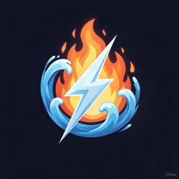

Lands of Balance
CLOUDThird-person medieval fantasy. Runs on the server, plays in your browser: keyboard, mouse and gamepad all stream back.
Contacting gateway…
Continue playing
How to play
- Click the video to capture the mouse when the game wants it; Esc gives it back.
- Plug a gamepad in at any time; it shows up in the game as joypad 0.
- The game's Q quits it — that ends the session.
- If the tab closes, the game waits a while for you to come back (reload with the same link).